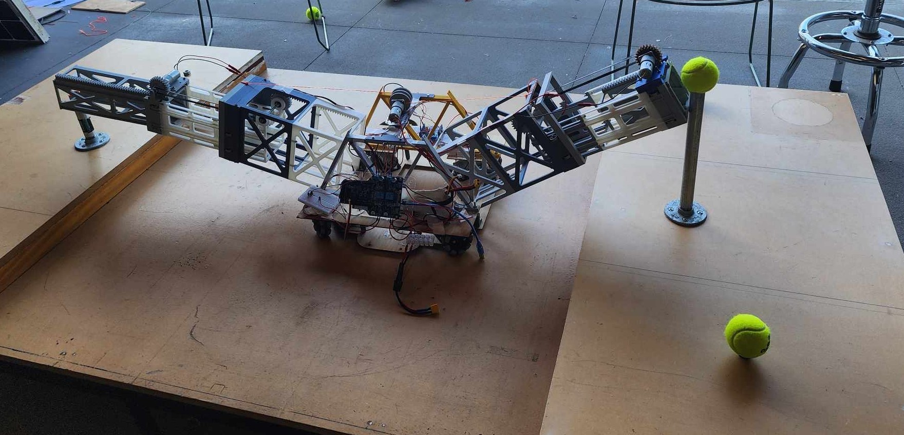
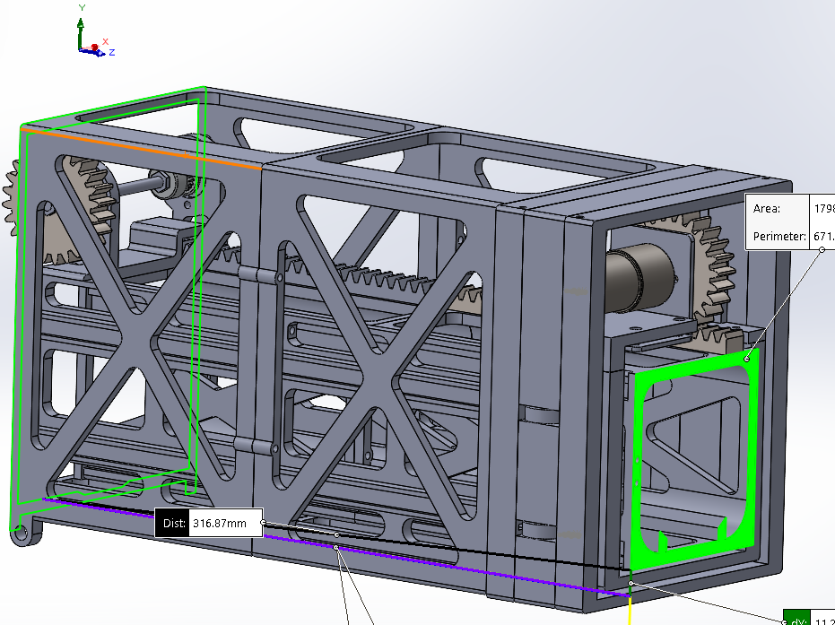
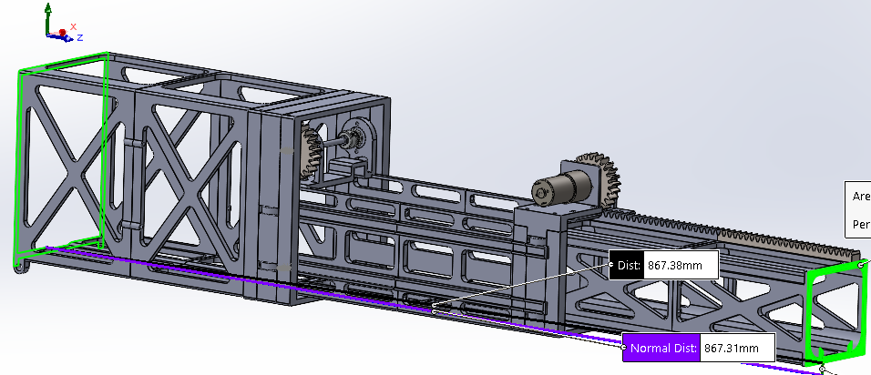
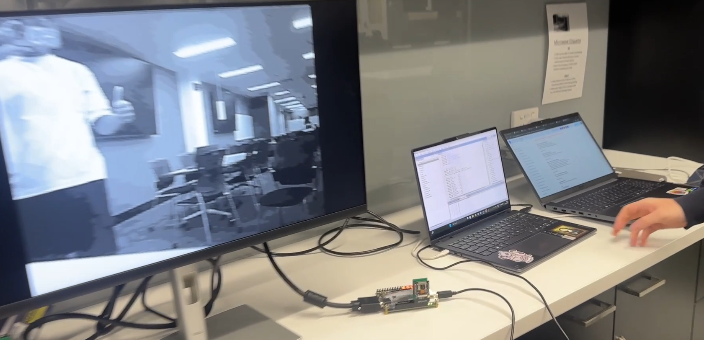
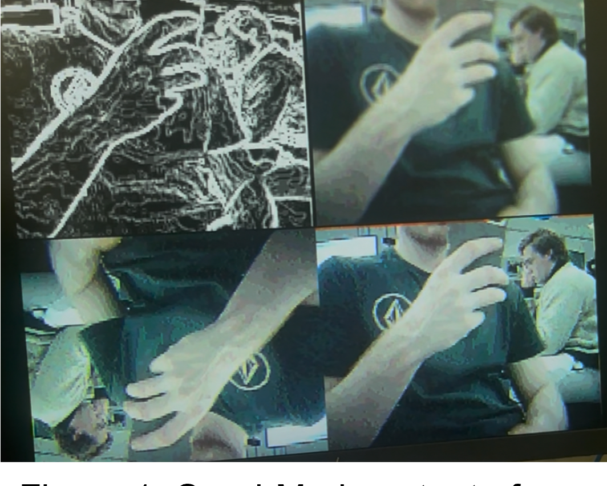
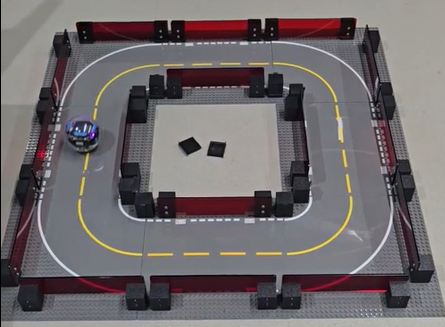

Automated Dual Robotic Arm Device
2024 Warman Design and Build Competition

Project Overview
Led a student engineering team in developing a robotic device for the 2024 Warman Design and Build Competition. The system featured a wheeled mobile platform with two large articulated robotic arms designed to collect, transport and deposit six balls into a designated chute.
Mechanical Design and Manufacturing
I designed more than 30 unique mechanical components using SolidWorks, which were manufactured through 3D printing and integrated into the robotic assembly.
The mechanical system incorporated articulated arm assemblies and telescopic gripping mechanisms to manipulate the balls during collection and depositing operations. Each arm can be raised and lowered to collect balls.

Compact robotic arm configuration

Extended robotic arm configuration
System Development
- Designed and assembled two articulated robotic arms with gripping mechanisms.
- Integrated an Arduino-based control system with the mechanical platform.
- Developed a mobile wheeled base for transporting collected objects.
- Refined mechanical designs through iterative prototyping, assembly and testing.
- Coordinated design and development activities across the student team.
Real-Time FPGA Camera and Image Processing System
Embedded Systems and Digital Design

Project Overview
Developed a real-time image capture and processing system using a DE10-Lite FPGA connected to an ESP32 camera module and VGA monitor.
The final implementation used three Nios II processors to manage camera communication, image processing and convolution-based edge detection.
System Architecture

Image frames were acquired over SPI and transferred into shared SDRAM. Interrupt-based communication synchronised frame acquisition and image processing between processors.
A separate convolution processor was introduced to assist with computationally intensive edge detection operations.
Image Processing Implementation
- Implemented real-time camera capture and frame buffering.
- Developed image flipping, blurring and Sobel edge detection algorithms.
- Upgraded the video pipeline from 4-bit greyscale to 12-bit RGB444 colour output.
- Supported single-image 320 × 240 display and quad-image 160 × 120 display modes.
- Integrated accelerometer, key and switch inputs for interactive control.
Results and Testing
The initial system operated at approximately 1.75 frames per second. Introducing a multi-processor architecture increased raw-image performance to approximately 18.9 frames per second.
The final RGB implementation operated at approximately 15 frames per second for raw-image display, while supporting additional filtering and display functionality.

Autonomous Robot Navigation and Control System
Robotics, Control Systems and Machine Learning

Project Overview
Developed an autonomous navigation and control system for a Sphero robot operating in complex maze environments.
The system combined a trained neural network navigation policy with conventional robotics techniques, including feedback control, state estimation and path planning.
Navigation and Control
- Trained a machine learning navigation policy to generate robot control actions.
- Implemented PID control for motion regulation.
- Applied an Extended Kalman Filter to estimate robot position and velocity.
- Integrated A* path planning for maze navigation.
- Developed collision recovery and stall detection mechanisms to improve navigation reliability.
Simulation and Testing
Evaluated navigation performance through simulation and physical robot testing, using iterative adjustments to refine control behaviour and improve reliability.
Autonomous robot navigation demonstration